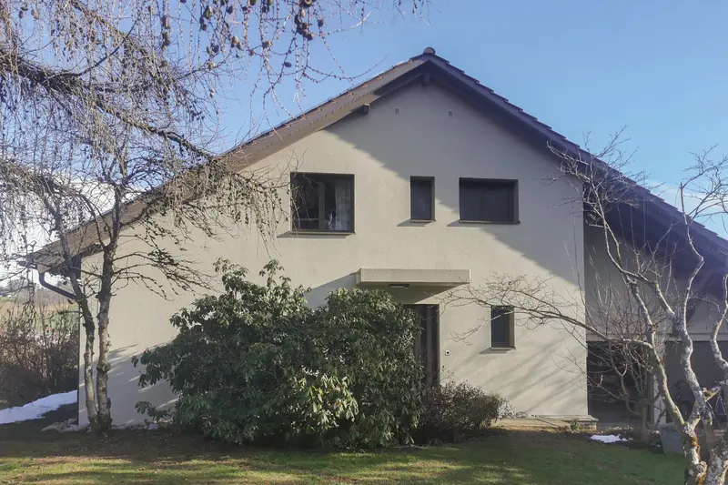
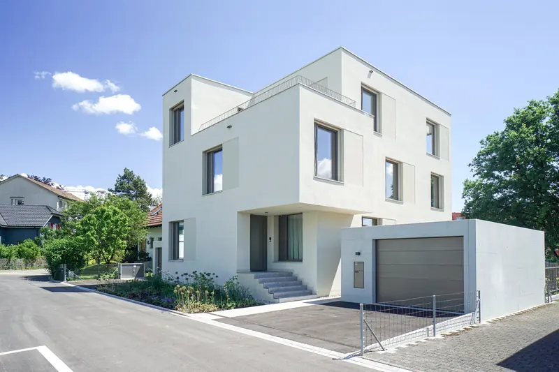
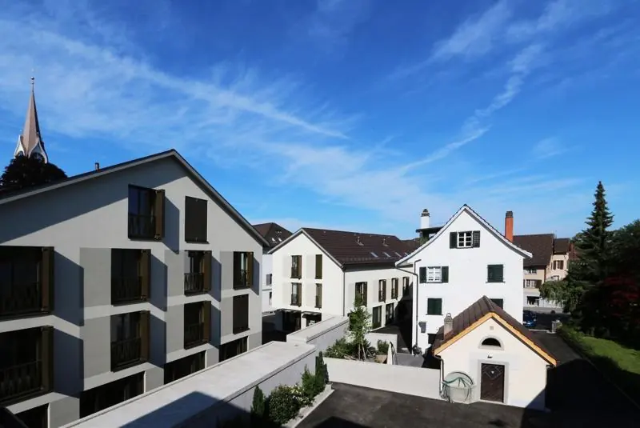
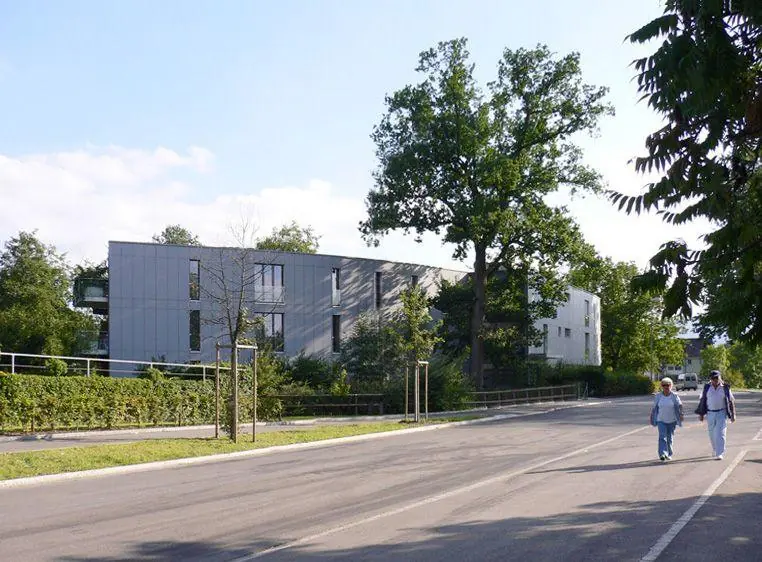

MFH Industriestrasse Uster
Sanierung eines Mehrfamilienhauses
- Fertigstellung
- 2024
- Bauherrschaft
- SBB AG Zürich
apb architekten ag aus Uster hat seit 2002 12 Wohnbauten realisiert – in Dübendorf, Feldmeilen, Greifensee, Niederuster, Uster, Volketswil und Wald.
Bauherrschaften: Baugesellschaft Lediweg; Baugesellschaft Seegarten; Konsortium «Teienstrasse»; RAK AG Immobilien- und Baugesellschaft; SBB AG Zürich.
Sanierung eines Mehrfamilienhauses

Energetische Sanierung eines Einfamilienhauses

Neubau einer Stadtvilla in monolitischer Bauweise. MINERGIE-P.

Fassadensanierung mit grossflächiger Photovoltaikanlage

Neubau Wohnüberbauung mit Gewerbe in Kernzone

Neubau Terrassenhaus mit exklusiven Eigentumswohnungen

Neubau Überbauung mit Gebäuden für Wohnen, Büro, Gewerbe und Kinderkrippe

Neubau Terrassenhaus mit idealer Aussicht auf den Zürich-See

MINERGIE-Niveau mit Erdsonde + kontrollierter Wohnungslüftung

Neubau Wohnüberbauung mit fünf MFH in Kernzone

Neubau Gebäude-Solitär mit 18 exklusiven Eigentumswohnungen

Neubau Mehrfamilienhaus mit sechs Eigentumswohnungen
Fragen zu einem Projekt oder eine eigene Aufgabe? Kontakt aufnehmen